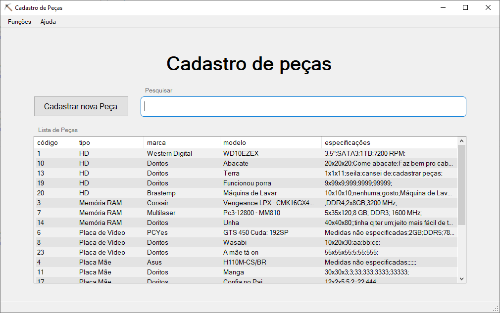
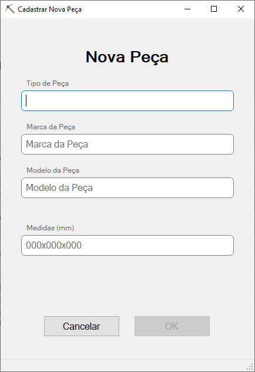
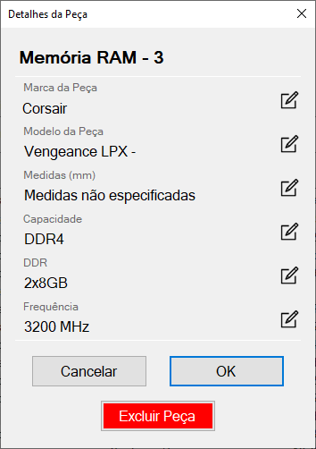

Cadastro de peças para Produção - Saco de Carvão Ltda.
Módulo de cadastro de peças da grandíssima montadora de computadores Saco de Carvão, com a ajuda deste módulo você será capaz de, caso seja um funcionário registrado, cadastrar novas peças no baco de dados da Firma, e caso seja administrador do sistema, editar as especificações das peças já cadastradas e até excluir as mesmas.
Formulário de Listagem de Peças
Menu de navegação
O menu de navegação fica localizado na parte superior do formulário de listagem, ele também é o único jeito de acessar o texto que você está lendo neste momento, então...
Cadastrar nova Peça
O botão "Cadastrar nova Peça" abre uma janela na qual você irá inserir as informações da peça que deseja cadastrar.
Pesquisar Peças
O campo “Pesquisar peças cadastradas” permite ao usuário pesquisar por peças a partir de algum de seus dados, no momento que algo é digitado no campo de pesquisa a lista de peças é automaticamente atualizada para conter apenas os elementos referentes à pesquisa.
Lista de Peças
A lista de peças ocupa a parte inferior do formulário, nela estão listadas as peças cadastradas no banco de dados, clicando duas vezes em algum item da lista, ou selecionando o item e ativando o item Editar Peça do menu Funções o usuário é capaz de visualizar os detalhes da peça escolhida, editar os campos caso seja administrador, ou excluir a peça do banco de dados.
Formulário de Cadastro de Peças
Tipo de Peça
O campo de texto aceita qualquer valor digitado, mas será validado somente caso o tipo de peça indicado pelo usuário já conste no banco de dados.
Marca da Peça
O campo de texto aceita qualquer valor digitado, mas será validado somente caso o número de caracteres digitado seja maior que dois, para prevenir que o campo seja deixado em branco.
Modelo da Peça
O campo de texto aceita qualquer valor digitado, mas será validado somente caso o número de caracteres digitado seja maior que dois, para prevenir que o campo seja deixado em branco.
Medidas (mm)
Como indicado no título do campo, os valores digitados devem estar em milímetros, mas o campo aceita qualquer tipo de texto, deve ser preenchido de acordo com o padrão 'Comprimento'x'Altura'x'Largura'.
Especificações
Assim que o campo tipo for preenchido corretamente, o formulário carregará as especificações da peça selecionada, nenhum destes campos é requerido, mas facilitarão consultas futuras ao banco de dados.
Cancelar
O botão Cancelar fecha o formulário de Cadastro e devolve o usuário ao início do programa sem que nenhuma alteração seja feita no banco de dados.
OK
O botão OK não pode ser pressionado até que o usuário tenha preenchido corretamente os campos de tipo, marca e modelo, ele gerará um novo registro de peça no banco de dados e adicionara um código à mesma. Após o cadastro o usuário será retornado ao formulário principal e a peça já estará listada.
Formulário de Detalhes da Peça
Título
O título do formulário é composta do tipo da peça, seguido de seu código no banco de dados, estes valores não podem ser alterados, caso haja necessidade de alteração, deve-se excluir esta peça e cadastrá-la novamente a fim de evitar registros duplicados.
Marca da Peça
A marca que foi cadastrada na peça, caso haja necessidade de alteração o usuário deve clicar no ícone de lápis no lado direito deste campo, o campo não deve ser deixado vazio.
Modelo da Peça
O modelo que foi cadastrado na peça, caso haja necessidade de alteração o usuário deve clicar no ícone de lápis no lado direito deste campo, o campo não deve ser deixado vazio.
Medidas (mm)
As medidas que foram cadastradas na peça, caso haja necessidade de alteração o usuário deve clicar no ícone de lápis no lado direito deste campo, segue o mesmo padrão de edição do formulário de cadastro.
Especificações
As especificações que foram cadastradas na peça, elas são diferentes de acordo com o tipo da peça, caso haja necessidade de alteração o usuário deve clicar no ícone de lápis no lado direito destes campos, seguem o mesmo padrão de edição do formulário de cadastro.
Cancelar
O botão Cancelar fecha o formulário de Detalhes e devolve o usuário ao início do programa sem que nenhuma alteração seja feita no banco de dados.
OK/Aplicar
O botão OK possuo dois estados, OK e Aplicar, sendo o segundo acessível caso o usuário tenha alterado alguma informação da peça. Em seu primeiro estágio a ação que será tomada é fechar o formulário de detalhes e retornar o usuário à listagem de peças, em seu segundo estágio o botão implantará as alterações feitas pelo usuário na peça selecionada (caso os campos marca e modelo tenham sido preenchidos corretamente).
Excluir Peça
O botão de excluir peça faz exatamente aquilo que você imaginou, esta ação é definitiva, então pense muito bem antes de usá-lo, quando a ação de exclusão for realizada o usuário será devolvido ao formulário principal.